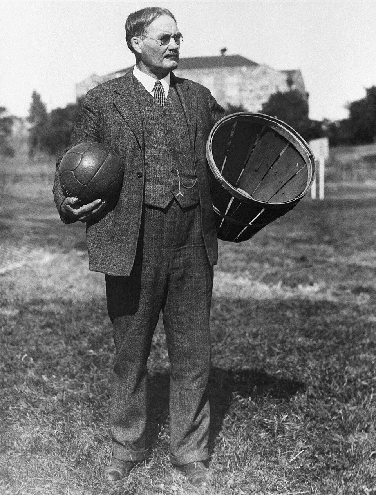
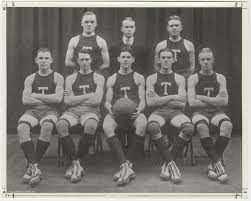
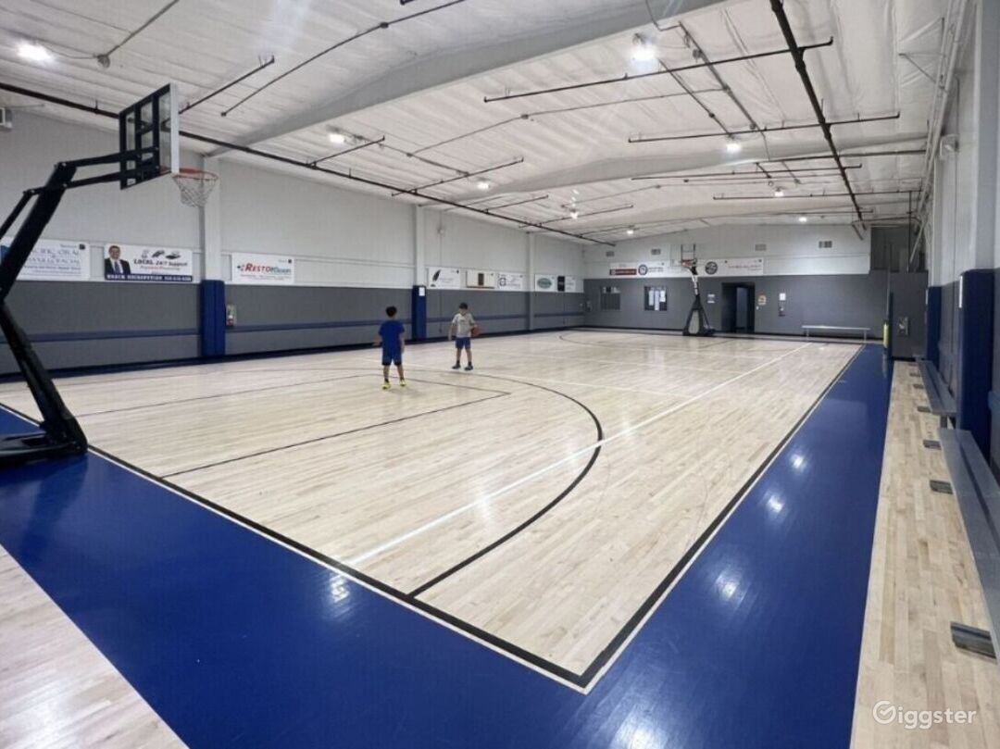
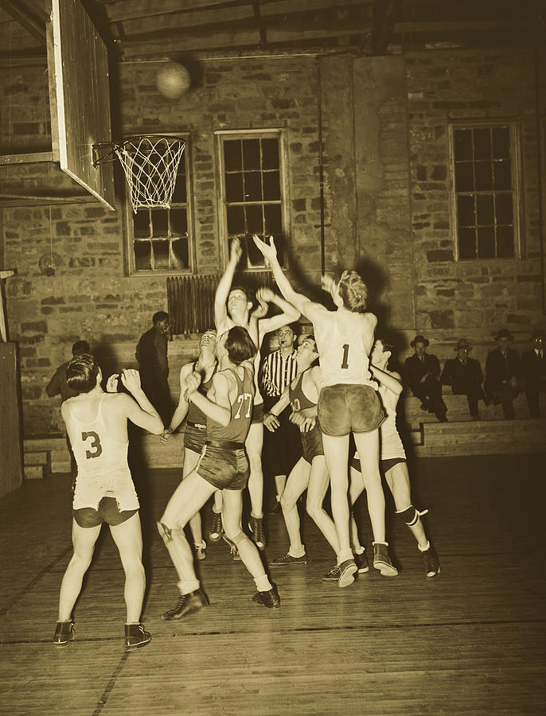

Basketball Gallery
Home
Basketball
Gallery

James Naismith (c. 1893). — Source: Wikimedia Commons

Early court play (c. 1920). — Source: Wikimedia Commons

Modern basketball court — Source: Unsplash (compressed)

Game action (c. 1940). — Source: Wikimedia Commons
View
Home
Animation